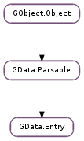

| static | new(id) |
| add_author(author) | |
| add_category(category) | |
| add_link(_link) | |
| get_authors() | |
| get_categories() | |
| get_content() | |
| get_content_uri() | |
| get_etag() | |
| get_id() | |
| get_published() | |
| get_rights() | |
| get_summary() | |
| get_title() | |
| get_updated() | |
| is_inserted() | |
| look_up_link(rel) | |
| look_up_links(rel) | |
| remove_link(_link) | |
| set_content(content) | |
| set_content_uri(content_uri) | |
| set_rights(rights) | |
| set_summary(summary) | |
| set_title(title) |
| Name | Type | Flags | Description |
|---|---|---|---|
| content | str | r/w | The content of the entry. |
| content-uri | str | r/w | A URI pointing to the location of the content of the entry. |
| etag | str | r/w/c | An identifier for a particular version of the entry. |
| id | str | r/w/c | A permanent, universally unique identifier for the entry, in IRI form. |
| is-inserted | bool | r | Whether the entry has been inserted on the server. |
| published | int | r | The date and time the entry was first published or made available. |
| rights | str | r/w | The ownership rights pertaining to the entry. |
| summary | str | r/w | A short summary, abstract, or excerpt of the entry. |
| title | str | r/w | A human-readable title for the entry. |
| updated | int | r | The date and time when the entry was most recently updated significantly. |
None
| Name | Type | Access |
|---|---|---|
| parent | GData.Parsable | r |
Bases: GData.Parsable
All the fields in the GData.Entry structure are private and should never be accessed directly.
| Parameters: | id (str or None) – the entry’s ID, or None |
|---|---|
| Returns: | a new GData.Entry ; unref with GObject.Object.unref () |
| Return type: | GData.Entry |
Creates a new GData.Entry with the given ID and default properties.
| Parameters: | author (GData.Author) – a GData.Author to add |
|---|
Adds author to the list of authors in the given GData.Entry and increments its reference count.
Duplicate authors will not be added to the list.
| Parameters: | category (GData.Category) – a GData.Category to add |
|---|
Adds category to the list of categories in the given GData.Entry, and increments its reference count.
Duplicate categories will not be added to the list.
| Parameters: | _link (GData.Link) – a GData.Link to add |
|---|
Adds _link to the list of links in the given GData.Entry and increments its reference count.
Duplicate links will not be added to the list.
| Returns: | a GLib.List of GData.Author s |
|---|---|
| Return type: | [GData.Author] |
Gets a list of the GData.Author s for this entry.
| Returns: | a GLib.List of GData.Category s |
|---|---|
| Return type: | [GData.Category] |
Gets a list of the GData.Category s containing this entry.
| Returns: | the entry’s content, or None |
|---|---|
| Return type: | str |
Returns the textual content in this entry. If the content in this entry is pointed to by a URI, None will be returned; the content URI will be returned by GData.Entry.get_content_uri ().
| Returns: | a URI pointing to the entry’s content, or None |
|---|---|
| Return type: | str |
Returns a URI pointing to the content of this entry. If the content in this entry is stored directly, None will be returned; the content will be returned by GData.Entry.get_content ().
| Returns: | the entry’s ETag |
|---|---|
| Return type: | str |
Returns the ETag of the entry; a unique identifier for each version of the entry. For more information, see the online documentation.
| Returns: | the entry’s ID |
|---|---|
| Return type: | str |
Returns the URN ID of the entry; a unique and permanent identifier for the object the entry represents.
| Returns: | the UNIX timestamp for the original publish time of the entry |
|---|---|
| Return type: | int |
Gets the time the entry was originally published.
| Returns: | the entry’s rights information |
|---|---|
| Return type: | str |
Returns the rights pertaining to the entry, or None if not set.
| Returns: | the entry’s summary, or None |
|---|---|
| Return type: | str |
Returns the summary of the entry.
| Returns: | the UNIX timestamp for the last update of the entry |
|---|---|
| Return type: | int |
Gets the time the entry was last updated.
| Returns: | True if the entry has been inserted already, False otherwise |
|---|---|
| Return type: | bool |
Returns whether the entry is marked as having been inserted on (uploaded to) the server already.
| Parameters: | rel (str) – the value of the rel attribute of the desired link |
|---|---|
| Returns: | a GData.Link, or None if one was not found |
| Return type: | GData.Link |
Looks up a link by relation type from the list of links in the entry. If the link has one of the standard Atom relation types, use one of the defined rel values, instead of a static string. e.g. GData.LINK_EDIT or GData.LINK_SELF.
In the rare event of requiring a list of links with the same rel value, use GData.Entry.look_up_links ().
| Parameters: | rel (str) – the value of the rel attribute of the desired links |
|---|---|
| Returns: | a GLib.List of GData.Link s, or None if none were found; free the list with GLib.List.free () |
| Return type: | [GData.Link] |
Looks up a list of links by relation type from the list of links in the entry. If the links have one of the standard Atom relation types, use one of the defined rel values, instead of a static string. e.g. GData.LINK_EDIT or GData.LINK_SELF.
If you will only use the first link found, consider calling GData.Entry.look_up_link () instead.
| Parameters: | _link (GData.Link) – a GData.Link to remove |
|---|---|
| Returns: | True if _link was found in the GData.Entry and removed, False if it was not found |
| Return type: | bool |
Removes _link from the list of links in the given GData.Entry and decrements its reference count (since the GData.Entry held a reference to it while it was in the list).
| Parameters: | content (str or None) – the new content for the entry, or None |
|---|
Sets the entry’s content to content. This unsets GData.Entry :content-uri.
| Parameters: | content_uri (str or None) – the new URI pointing to the content for the entry, or None |
|---|
Sets the URI pointing to the entry’s content to content. This unsets GData.Entry :content.
| Parameters: | rights (str or None) – the new rights, or None |
|---|
Sets the rights for this entry.